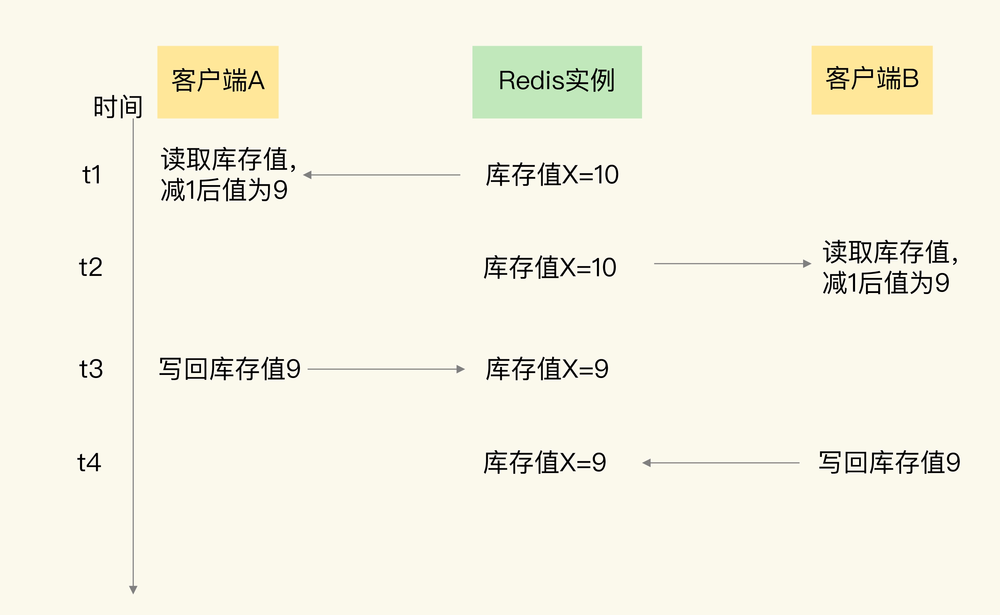
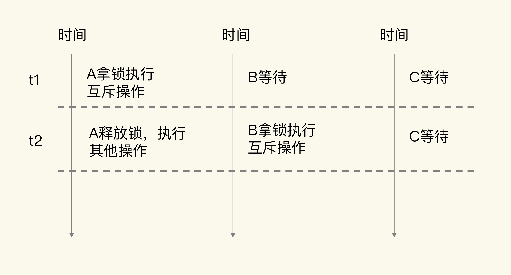

- 00 开篇词 这样学Redis，才能技高一筹.md
- 01 基本架构：一个键值数据库包含什么？.md
- 02 数据结构：快速的Redis有哪些慢操作？.md
- 03 高性能IO模型：为什么单线程Redis能那么快？.md
- 04 AOF日志：宕机了，Redis如何避免数据丢失？.md
- 05 内存快照：宕机后，Redis如何实现快速恢复？.md
- 06 数据同步：主从库如何实现数据一致？.md
- 07 哨兵机制：主库挂了，如何不间断服务？.md
- 08 哨兵集群：哨兵挂了，主从库还能切换吗？.md
- 09 切片集群：数据增多了，是该加内存还是加实例？.md
- 10 第1～9讲课后思考题答案及常见问题答疑.md
- 11 “万金油”的String，为什么不好用了？.md
- 12 有一亿个keys要统计，应该用哪种集合？.md
- 13 GEO是什么？还可以定义新的数据类型吗？.md
- 14 如何在Redis中保存时间序列数据？.md
- 15 消息队列的考验：Redis有哪些解决方案？.md
- 16 异步机制：如何避免单线程模型的阻塞？.md
- 17 为什么CPU结构也会影响Redis的性能？.md
- 18 波动的响应延迟：如何应对变慢的Redis？（上）.md
- 19 波动的响应延迟：如何应对变慢的Redis？（下）.md
- 20 删除数据后，为什么内存占用率还是很高？.md
- 21 缓冲区：一个可能引发“惨案”的地方.md
- 22 第11～21讲课后思考题答案及常见问题答疑.md
- 23 旁路缓存：Redis是如何工作的？.md
- 24 替换策略：缓存满了怎么办？.md
- 25 缓存异常（上）：如何解决缓存和数据库的数据不一致问题？.md
- 26 缓存异常（下）：如何解决缓存雪崩、击穿、穿透难题？.md
- 27 缓存被污染了，该怎么办？.md
- 28 Pika：如何基于SSD实现大容量Redis？.md
- 29 无锁的原子操作：Redis如何应对并发访问？.md
- 30 如何使用Redis实现分布式锁？.md
- 31 事务机制：Redis能实现ACID属性吗？.md
- 32 Redis主从同步与故障切换，有哪些坑？.md
- 33 脑裂：一次奇怪的数据丢失.md
- 34 第23~33讲课后思考题答案及常见问题答疑.md
- 35 Codis VS Redis Cluster：我该选择哪一个集群方案？.md
- 36 Redis支撑秒杀场景的关键技术和实践都有哪些？.md
- 37 数据分布优化：如何应对数据倾斜？.md
- 38 通信开销：限制Redis Cluster规模的关键因素.md
- 39 Redis 6.0的新特性：多线程、客户端缓存与安全.md
- 40 Redis的下一步：基于NVM内存的实践.md
- 41 第35～40讲课后思考题答案及常见问题答疑.md
- 加餐 01 经典的Redis学习资料有哪些？.md
- 加餐 02 用户Kaito：我是如何学习Redis的？.md
- 加餐 03 用户Kaito：我希望成为在压力中成长的人.md
- 加餐 04 Redis客户端如何与服务器端交换命令和数据？.md
- 加餐 05 Redis有哪些好用的运维工具？.md
- 加餐 06 Redis的使用规范小建议.md
- 加餐 07 从微博的Redis实践中，我们可以学到哪些经验？.md
- 结束语 从学习Redis到向Redis学习.md
29 无锁的原子操作：Redis如何应对并发访问？
我们在使用 Redis 时，不可避免地会遇到并发访问的问题，比如说如果多个用户同时下单，就会对缓存在 Redis 中的商品库存并发更新。一旦有了并发写操作，数据就会被修改，如果我们没有对并发写请求做好控制，就可能导致数据被改错，影响到业务的正常使用（例如库存数据错误，导致下单异常）。
为了保证并发访问的正确性，Redis 提供了两种方法，分别是加锁和原子操作。
加锁是一种常用的方法，在读取数据前，客户端需要先获得锁，否则就无法进行操作。当一个客户端获得锁后，就会一直持有这把锁，直到客户端完成数据更新，才释放这把锁。
看上去好像是一种很好的方案，但是，其实这里会有两个问题：一个是，如果加锁操作多，会降低系统的并发访问性能；第二个是，Redis 客户端要加锁时，需要用到分布式锁，而分布式锁实现复杂，需要用额外的存储系统来提供加解锁操作，我会在下节课向你介绍。
原子操作是另一种提供并发访问控制的方法。原子操作是指执行过程保持原子性的操作，而且原子操作执行时并不需要再加锁，实现了无锁操作。这样一来，既能保证并发控制，还能减少对系统并发性能的影响。
这节课，我就来和你聊聊 Redis 中的原子操作。原子操作的目标是实现并发访问控制，那么当有并发访问请求时，我们具体需要控制什么呢？接下来，我就先向你介绍下并发控制的内容。
并发访问中需要对什么进行控制？
我们说的并发访问控制，是指对多个客户端访问操作同一份数据的过程进行控制，以保证任何一个客户端发送的操作在 Redis 实例上执行时具有互斥性。例如，客户端 A 的访问操作在执行时，客户端 B 的操作不能执行，需要等到 A 的操作结束后，才能执行。
并发访问控制对应的操作主要是数据修改操作。当客户端需要修改数据时，基本流程分成两步：
- 客户端先把数据读取到本地，在本地进行修改；
- 客户端修改完数据后，再写回 Redis。
我们把这个流程叫做“读取 - 修改 - 写回”操作（Read-Modify-Write，简称为 RMW 操作）。当有多个客户端对同一份数据执行 RMW 操作的话，我们就需要让 RMW 操作涉及的代码以原子性方式执行。访问同一份数据的 RMW 操作代码，就叫做临界区代码。
不过，当有多个客户端并发执行临界区代码时，就会存在一些潜在问题，接下来，我用一个多客户端更新商品库存的例子来解释一下。
我们先看下临界区代码。假设客户端要对商品库存执行扣减 1 的操作，伪代码如下所示：
current = GET(id)
current--
SET(id, current)
可以看到，客户端首先会根据商品 id，从 Redis 中读取商品当前的库存值 current（对应 Read)，然后，客户端对库存值减 1（对应 Modify），再把库存值写回 Redis（对应 Write）。当有多个客户端执行这段代码时，这就是一份临界区代码。
如果我们对临界区代码的执行没有控制机制，就会出现数据更新错误。在刚才的例子中，假设现在有两个客户端 A 和 B，同时执行刚才的临界区代码，就会出现错误，你可以看下下面这张图。

可以看到，客户端 A 在 t1 时读取库存值 10 并扣减 1，在 t2 时，客户端 A 还没有把扣减后的库存值 9 写回 Redis，而在此时，客户端 B 读到库存值 10，也扣减了 1，B 记录的库存值也为 9 了。等到 t3 时，A 往 Redis 写回了库存值 9，而到 t4 时，B 也写回了库存值 9。
如果按正确的逻辑处理，客户端 A 和 B 对库存值各做了一次扣减，库存值应该为 8。所以，这里的库存值明显更新错了。
出现这个现象的原因是，临界区代码中的客户端读取数据、更新数据、再写回数据涉及了三个操作，而这三个操作在执行时并不具有互斥性，多个客户端基于相同的初始值进行修改，而不是基于前一个客户端修改后的值再修改。
为了保证数据并发修改的正确性，我们可以用锁把并行操作变成串行操作，串行操作就具有互斥性。一个客户端持有锁后，其他客户端只能等到锁释放，才能拿锁再进行修改。
下面的伪代码显示了使用锁来控制临界区代码的执行情况，你可以看下。
LOCK()
current = GET(id)
current--
SET(id, current)
UNLOCK()
虽然加锁保证了互斥性，但是加锁也会导致系统并发性能降低。
如下图所示，当客户端 A 加锁执行操作时，客户端 B、C 就需要等待。A 释放锁后，假设 B 拿到锁，那么 C 还需要继续等待，所以，t1 时段内只有 A 能访问共享数据，t2 时段内只有 B 能访问共享数据，系统的并发性能当然就下降了。

和加锁类似，原子操作也能实现并发控制，但是原子操作对系统并发性能的影响较小，接下来，我们就来了解下 Redis 中的原子操作。
Redis 的两种原子操作方法
为了实现并发控制要求的临界区代码互斥执行，Redis 的原子操作采用了两种方法：
- 把多个操作在 Redis 中实现成一个操作，也就是单命令操作；
- 把多个操作写到一个 Lua 脚本中，以原子性方式执行单个 Lua 脚本。
我们先来看下 Redis 本身的单命令操作。
Redis 是使用单线程来串行处理客户端的请求操作命令的，所以，当 Redis 执行某个命令操作时，其他命令是无法执行的，这相当于命令操作是互斥执行的。当然，Redis 的快照生成、AOF 重写这些操作，可以使用后台线程或者是子进程执行，也就是和主线程的操作并行执行。不过，这些操作只是读取数据，不会修改数据，所以，我们并不需要对它们做并发控制。
你可能也注意到了，虽然 Redis 的单个命令操作可以原子性地执行，但是在实际应用中，数据修改时可能包含多个操作，至少包括读数据、数据增减、写回数据三个操作，这显然就不是单个命令操作了，那该怎么办呢？
别担心，Redis 提供了 INCR/DECR 命令，把这三个操作转变为一个原子操作了。INCR/DECR 命令可以对数据进行增值 / 减值操作，而且它们本身就是单个命令操作，Redis 在执行它们时，本身就具有互斥性。
比如说，在刚才的库存扣减例子中，客户端可以使用下面的代码，直接完成对商品 id 的库存值减 1 操作。即使有多个客户端执行下面的代码，也不用担心出现库存值扣减错误的问题。
DECR id
所以，如果我们执行的 RMW 操作是对数据进行增减值的话，Redis 提供的原子操作 INCR 和 DECR 可以直接帮助我们进行并发控制。
但是，如果我们要执行的操作不是简单地增减数据，而是有更加复杂的判断逻辑或者是其他操作，那么，Redis 的单命令操作已经无法保证多个操作的互斥执行了。所以，这个时候，我们需要使用第二个方法，也就是 Lua 脚本。
Redis 会把整个 Lua 脚本作为一个整体执行，在执行的过程中不会被其他命令打断，从而保证了 Lua 脚本中操作的原子性。如果我们有多个操作要执行，但是又无法用 INCR/DECR 这种命令操作来实现，就可以把这些要执行的操作编写到一个 Lua 脚本中。然后，我们可以使用 Redis 的 EVAL 命令来执行脚本。这样一来，这些操作在执行时就具有了互斥性。
我再给你举个例子，来具体解释下 Lua 的使用。
当一个业务应用的访问用户增加时，我们有时需要限制某个客户端在一定时间范围内的访问次数，比如爆款商品的购买限流、社交网络中的每分钟点赞次数限制等。
那该怎么限制呢？我们可以把客户端 IP 作为 key，把客户端的访问次数作为 value，保存到 Redis 中。客户端每访问一次后，我们就用 INCR 增加访问次数。
不过，在这种场景下，客户端限流其实同时包含了对访问次数和时间范围的限制，例如每分钟的访问次数不能超过 20。所以，我们可以在客户端第一次访问时，给对应键值对设置过期时间，例如设置为 60s 后过期。同时，在客户端每次访问时，我们读取客户端当前的访问次数，如果次数超过阈值，就报错，限制客户端再次访问。你可以看下下面的这段代码，它实现了对客户端每分钟访问次数不超过 20 次的限制。
//获取ip对应的访问次数
current = GET(ip)
//如果超过访问次数超过20次，则报错
IF current != NULL AND current > 20 THEN
ERROR "exceed 20 accesses per second"
ELSE
//如果访问次数不足20次，增加一次访问计数
value = INCR(ip)
//如果是第一次访问，将键值对的过期时间设置为60s后
IF value == 1 THEN
EXPIRE(ip,60)
END
//执行其他操作
DO THINGS
END
可以看到，在这个例子中，我们已经使用了 INCR 来原子性地增加计数。但是，客户端限流的逻辑不只有计数，还包括访问次数判断和过期时间设置。
对于这些操作，我们同样需要保证它们的原子性。否则，如果客户端使用多线程访问，访问次数初始值为 0，第一个线程执行了 INCR(ip) 操作后，第二个线程紧接着也执行了 INCR(ip)，此时，ip 对应的访问次数就被增加到了 2，我们就无法再对这个 ip 设置过期时间了。这样就会导致，这个 ip 对应的客户端访问次数达到 20 次之后，就无法再进行访问了。即使过了 60s，也不能再继续访问，显然不符合业务要求。
所以，这个例子中的操作无法用 Redis 单个命令来实现，此时，我们就可以使用 Lua 脚本来保证并发控制。我们可以把访问次数加 1、判断访问次数是否为 1，以及设置过期时间这三个操作写入一个 Lua 脚本，如下所示：
local current
current = redis.call("incr",KEYS[1])
if tonumber(current) == 1 then
redis.call("expire",KEYS[1],60)
end
假设我们编写的脚本名称为 lua.script，我们接着就可以使用 Redis 客户端，带上 eval 选项，来执行该脚本。脚本所需的参数将通过以下命令中的 keys 和 args 进行传递。
redis-cli --eval lua.script keys , args
这样一来，访问次数加 1、判断访问次数是否为 1，以及设置过期时间这三个操作就可以原子性地执行了。即使客户端有多个线程同时执行这个脚本，Redis 也会依次串行执行脚本代码，避免了并发操作带来的数据错误。
小结
在并发访问时，并发的 RMW 操作会导致数据错误，所以需要进行并发控制。所谓并发控制，就是要保证临界区代码的互斥执行。
Redis 提供了两种原子操作的方法来实现并发控制，分别是单命令操作和 Lua 脚本。因为原子操作本身不会对太多的资源限制访问，可以维持较高的系统并发性能。
但是，单命令原子操作的适用范围较小，并不是所有的 RMW 操作都能转变成单命令的原子操作（例如 INCR/DECR 命令只能在读取数据后做原子增减），当我们需要对读取的数据做更多判断，或者是我们对数据的修改不是简单的增减时，单命令操作就不适用了。
而 Redis 的 Lua 脚本可以包含多个操作，这些操作都会以原子性的方式执行，绕开了单命令操作的限制。不过，如果把很多操作都放在 Lua 脚本中原子执行，会导致 Redis 执行脚本的时间增加，同样也会降低 Redis 的并发性能。所以，我给你一个小建议：在编写 Lua 脚本时，你要避免把不做并发控制的操作写入脚本中需要。
当然，加锁也能实现临界区代码的互斥执行，只是如果有多个客户端加锁时，就需要分布式锁的支持了。所以，下节课，我就来和你聊聊分布式锁的实现。
每课一问
按照惯例，我向你提个小问题，Redis 在执行 Lua 脚本时，是可以保证原子性的，那么，在我举的 Lua 脚本例子（lua.script）中，你觉得是否需要把读取客户端 ip 的访问次数，也就是 GET(ip)，以及判断访问次数是否超过 20 的判断逻辑，也加到 Lua 脚本中吗？
欢迎在留言区写下你的思考和答案，我们一起交流讨论。如果你觉得今天的内容对你有所帮助，也欢迎你分享给你的朋友或同事。我们下节课见。
© 2019 - 2023 Liangliang Lee. Powered by Vert.x and hexo-theme-book.